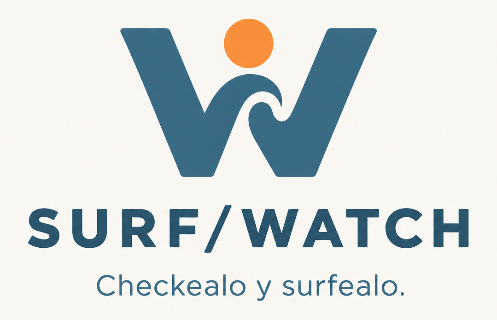

Mapa base de OpenStreetMap. Toca un marcador para abrir la ficha del spot. Los enlaces de cámara abren la fuente original cuando no es posible integrar el reproductor.
Consultando Open-Meteo Marine…
Consultando Open-Meteo…